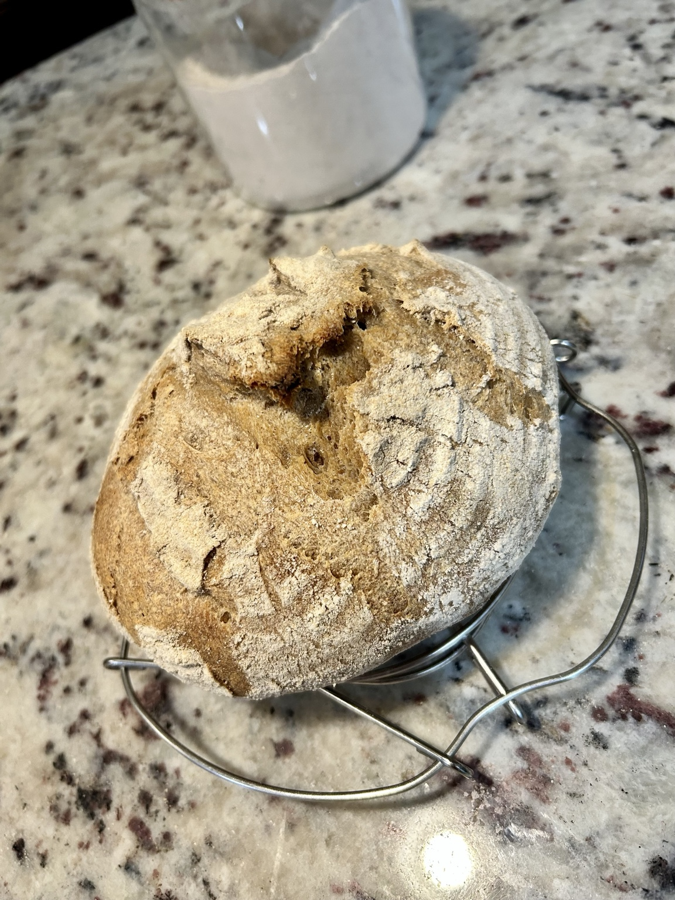
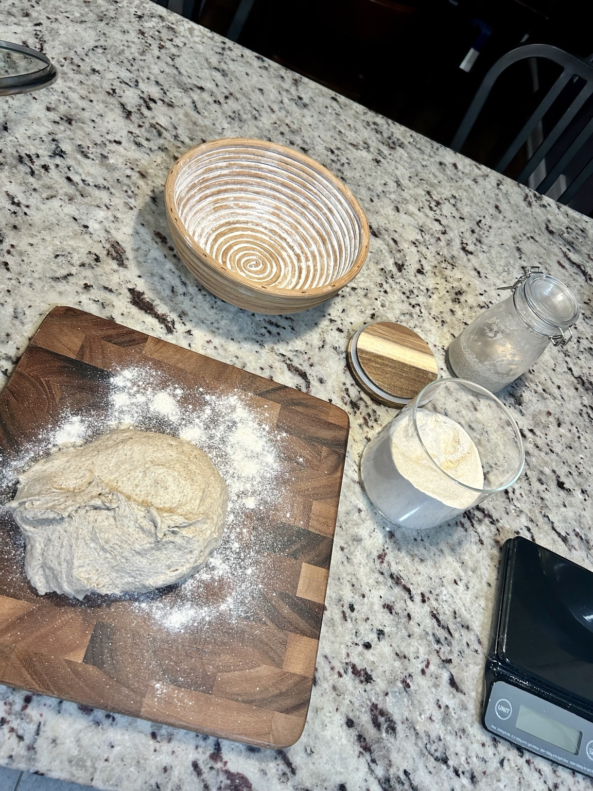
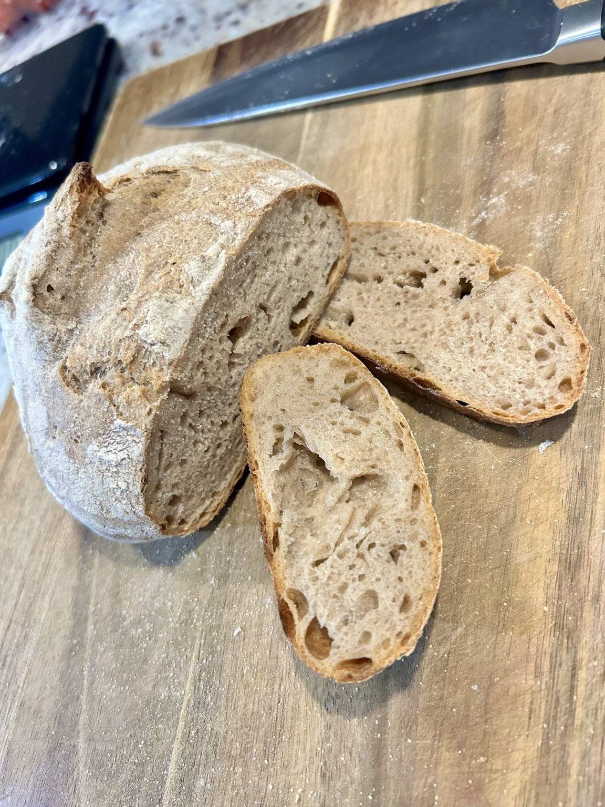

Bread
My First Sourdough Bread
A small whole-wheat sourdough loaf made with an active rye starter.




Ingredients
Dough
- 175 g bread flour
- 75 g whole-wheat flour
- 50 g active rye sourdough starter
- 187 g water
- 5 g salt
Method
- Mix the flours, starter, and water until no dry flour remains. Rest for about 20–30 minutes.
- Add the salt and work it through the dough until evenly distributed.
- Cover and bulk ferment at room temperature until the dough looks aerated and has risen noticeably, giving it 2–3 sets of stretch-and-folds during the first 1 1/2–2 hours.
- Shape gently into a small round or batard. Place seam-side up in a floured basket or towel-lined bowl, cover, and proof until ready to bake. Refrigerate overnight if preferred.
- Preheat a Dutch oven at 475°F. Turn out the loaf, score, cover, and bake about 20 minutes. Uncover, reduce to 450°F, and bake another 15–20 minutes until deeply browned.
- Cool completely before slicing.
Serving
Best once fully cooled; slice thickly and toast on the following day.
Notes
The first loaf. A compact batch, enough to learn the rhythm of mixing, folds, shaping, proofing, scoring, and baking without committing to a large loaf.
← Back to recipes